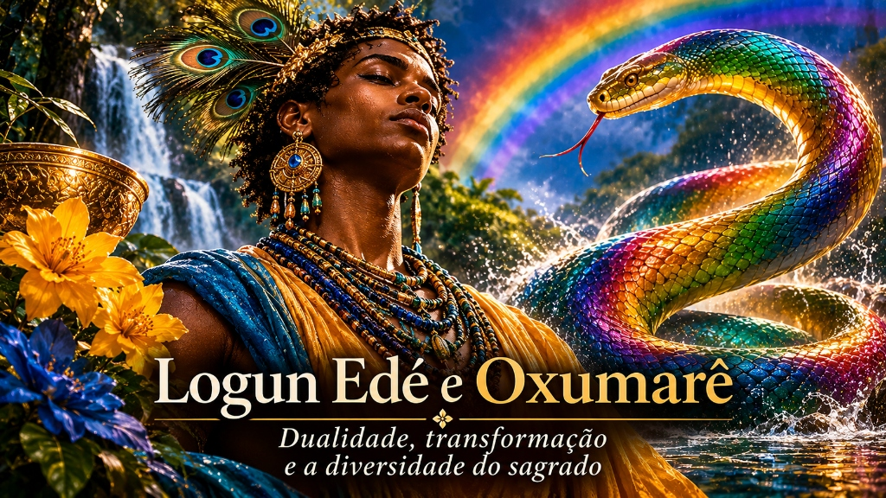

Logun Edé e Oxumarê: dualidade, transformação e a diversidade das expressões do sagrado
Uma investigação sobre os símbolos da complementaridade, os movimentos da natureza, as tradições dos Orixás e as possibilidades de pensar a diversidade humana para além das fronteiras rígidas do gênero.

Logun Edé e Oxumarê: dualidade, transformação e a diversidade das expressões do sagrado • Acervo Pombagiras.com
Introdução — Quando o sagrado não cabe em uma única forma
Existe uma pergunta que atravessa diferentes épocas, culturas e sociedades: por que insistimos em estabelecer fronteiras tão rígidas para aquilo que, na própria natureza, se manifesta de tantas maneiras?
A natureza não se organiza exclusivamente por oposições simples. Nela encontramos movimento, alternância, coexistência, complementaridade, transformação e multiplicidade. Há ciclos que se encontram, forças que se misturam e fenômenos que não podem ser compreendidos quando observados por apenas um ângulo.
Na cosmologia dos Orixás, encontramos narrativas e símbolos que permitem refletir profundamente sobre essas questões.
Entre essas divindades, duas merecem atenção especial: Logun Edé e Oxumarê.
Logun Edé, associado às águas doces de Oxum e às matas de Oxóssi, apresenta uma imagem de complementaridade que desafia interpretações simplificadoras. Oxumarê, relacionado ao arco-íris, à serpente, aos movimentos das águas e à continuidade dos ciclos, oferece outra perspectiva: a existência não está condenada à imobilidade.
Essas divindades permitem abrir uma conversa sobre dualidade, identidade, expressão, transformação e diversidade sem que seja necessário aprisioná-las em definições contemporâneas.
Não se trata de afirmar que os Orixás são representações literais das identidades LGBTQIA+, tampouco de transformar antigas cosmologias em categorias modernas. Trata-se de reconhecer que suas narrativas podem dialogar com experiências humanas que muitas sociedades insistiram em marginalizar.
Para pessoas trans, não binárias, de gênero fluido e para todas aquelas que não encontram reconhecimento nas classificações tradicionais, essa reflexão pode adquirir uma dimensão particularmente acolhedora.
Mas, antes de qualquer interpretação, precisamos conhecer as divindades em sua complexidade.
1. Antes de falar sobre dualidade: compreender o universo dos Orixás
Os Orixás não são personagens de uma mitologia isolada, criada apenas para explicar fenômenos naturais. São divindades cultuadas em tradições religiosas de matriz africana, especialmente nas religiões de matriz iorubá e em suas expressões afro-brasileiras.
Seus conhecimentos são transmitidos por narrativas, cantigas, rituais, linhagens religiosas, fundamentos e experiências comunitárias.
É importante compreender que não existe uma única versão universal de todas as histórias.
Um itan pode apresentar variações de acordo com a tradição, a região, a linhagem e a comunidade que o preserva. Uma interpretação encontrada em determinada casa não deve ser automaticamente apresentada como regra de todas as outras.
Essa observação é particularmente importante quando abordamos gênero.
As sociedades africanas não podem ser interpretadas exclusivamente a partir das classificações europeias modernas. As concepções de pessoa, corpo, parentesco, autoridade, posição social e espiritualidade possuem histórias próprias.
Também seria incorreto concluir que todas as sociedades africanas eram naturalmente livres de hierarquias ou preconceitos relacionados ao gênero.
O cuidado necessário é outro: não utilizar o binarismo ocidental contemporâneo como instrumento universal para explicar todas as experiências culturais e religiosas.
É nesse horizonte que Logun Edé e Oxumarê se tornam especialmente interessantes.
2. Logun Edé: a beleza de não precisar escolher entre duas forças
Logun Edé, também grafado Logunedé ou Lógun Ẹ̀dẹ, é um Orixá associado à juventude, à beleza, à riqueza, à caça e às águas doces.
Sua identidade religiosa está profundamente relacionada a Oxum e Oxóssi.
Nas narrativas mais conhecidas no Brasil, Logun Edé é apresentado como filho dessas duas divindades. Sua história aproxima dois domínios da natureza: o rio e a floresta.
Oxum representa, entre outros aspectos, as águas doces, a fertilidade, a beleza, a riqueza, a sensibilidade e a capacidade de acolhimento.
Oxóssi está relacionado às matas, à caça, ao conhecimento da floresta, à fartura e à habilidade de encontrar aquilo que é necessário para a sobrevivência.
Logun Edé carrega essa relação entre dois universos.
2.1. Os seis meses nas águas e os seis meses nas matas
Uma das narrativas mais conhecidas sobre Logun Edé conta que ele passa parte do ano junto de Oxum, nas águas, e outra parte junto de Oxóssi, nas matas.
Essa alternância é frequentemente apresentada como seis meses em cada domínio.
A imagem é poderosa porque nos permite compreender uma existência relacionada a dois ambientes, duas heranças e duas formas de experiência.
Entretanto, existe um detalhe importante: não devemos interpretar essa narrativa como se Logun Edé precisasse abandonar uma identidade para assumir outra.
Ele não precisa deixar de ser filho das águas para se tornar filho da floresta.
Não precisa renunciar à delicadeza para demonstrar força, nem abandonar a força para expressar beleza.
Sua representação religiosa reúne atributos associados a Oxum e Oxóssi.
É justamente essa coexistência que torna sua figura tão interessante para uma reflexão sobre dualidade.
2.2. A dualidade não significa incompletude
Existe uma tendência humana de interpretar tudo por meio de oposições:
- Força ou delicadeza.
- Beleza ou coragem.
- Sensibilidade ou objetividade.
- Feminilidade ou masculinidade.
- Acolhimento ou enfrentamento.
Mas será que essas características realmente precisam se excluir?
Logun Edé oferece uma possibilidade simbólica diferente.
A delicadeza não elimina a força. A beleza não diminui a coragem. A sensibilidade não representa fragilidade.
Uma pessoa pode possuir características culturalmente classificadas como femininas e masculinas sem que isso constitua uma contradição.
O erro está em acreditar que uma característica precisa anular a outra.
A dualidade de Logun Edé, quando interpretada a partir da relação entre seus domínios e suas heranças, permite questionar justamente essa necessidade de escolher apenas um lado.
2.3. Logun Edé e o diálogo com pessoas não binárias
É aqui que a discussão encontra uma dimensão contemporânea.
Pessoas não binárias frequentemente enfrentam uma sociedade que exige respostas simples para experiências humanas complexas.
Perguntas como:
- Você é homem ou mulher?
- Por que não escolhe um lado?
- Por que sua aparência não corresponde ao que esperam?
- Por que sua expressão muda?
- Por que você não se comporta de acordo com determinado padrão?
Essas cobranças partem de uma compreensão limitada da identidade humana.
A existência de uma pessoa não deveria precisar ser justificada pela capacidade de satisfazer expectativas externas.
A leitura simbólica de Logun Edé pode oferecer uma reflexão acolhedora: a coexistência de diferentes atributos não precisa ser tratada como defeito, desvio ou ausência de definição.
Não é necessário ser metade de alguma coisa para ser inteiro.
Essa frase sintetiza uma interpretação contemporânea possível de sua dualidade, sem pretender definir a identidade religiosa do Orixá.
Logun Edé não precisa ser declarado não binário para que pessoas não binárias encontrem na sua história uma possibilidade de identificação, beleza e pertencimento.
Essa distinção é fundamental: a experiência de identificação pertence também a quem contempla o símbolo, sem que isso autorize modificar arbitrariamente o fundamento da divindade.
3. Oxumarê: a serpente, o arco-íris e a continuidade da transformação
Se Logun Edé permite refletir sobre a coexistência de atributos, Oxumarê nos conduz a outra dimensão: o movimento.
Oxumarê, também escrito Òṣùmàrè, está associado ao arco-íris, à serpente e aos movimentos cíclicos da natureza.
Em diferentes tradições, sua representação está relacionada à circulação das águas, à ligação entre céu e terra, à continuidade da vida e à renovação.
A imagem do arco-íris é especialmente significativa.
A água evapora, sobe, transforma-se, retorna à terra e alimenta novos ciclos. O que parecia desaparecer não deixou de existir: mudou de condição.
Essa relação com o movimento ajuda a compreender por que Oxumarê ocupa um lugar tão importante nas reflexões sobre transformação.
3.1. A serpente e o significado da renovação
A serpente é um símbolo presente em diferentes sistemas religiosos e culturais.
Em determinadas narrativas, sua capacidade de trocar de pele está associada à renovação e à continuidade.
A serpente não precisa permanecer com a mesma aparência para continuar sendo serpente.
A mudança de pele não significa necessariamente destruição. Pode representar a passagem para outra condição de existência.
Essa imagem permite uma reflexão humana muito profunda.
Quantas vezes uma pessoa precisa abandonar expectativas que foram construídas sobre ela?
Quantas vezes precisa reconstruir sua relação com o próprio corpo, sua identidade, sua história e sua maneira de existir?
A transformação pode ser dolorosa, mas também pode representar libertação.
Para muitas pessoas trans e não binárias, a construção de uma vida coerente com a própria identidade envolve processos de reconhecimento, afirmação, reconstrução e pertencimento.
A associação simbólica entre Oxumarê e a renovação pode estabelecer um diálogo respeitoso com essas experiências.
Isso não significa que a divindade seja uma explicação religiosa para a transgeneridade. Significa reconhecer que seus símbolos permitem pensar sobre a legitimidade da transformação.
3.2. Oxumarê e as narrativas sobre o masculino e o feminino
Oxumarê possui narrativas e interpretações relacionadas à dualidade sexual e à alternância entre aspectos masculinos e femininos.
Há textos que descrevem essa característica por meio de uma passagem entre duas condições ao longo do ano.
Uma dessas interpretações aparece no artigo acadêmico Dan: a serpente arco-íris, de Vinícius Vasconcelos Castro, publicado em 2012 na revista Diversidade Religiosa, da Universidade Federal da Paraíba.
Entretanto, é indispensável apresentar a diversidade das interpretações.
Em determinadas tradições, Oxumarê é compreendido como uma divindade masculina, e a associação com uma natureza feminina ou andrógina não é aceita como fundamento religioso.
O livro Do Candomblé de Queto, por exemplo, apresenta uma interpretação que rejeita a ideia de que Oxumarê alterne entre homem e mulher.
Essa diferença não deve ser escondida para facilitar uma narrativa contemporânea.
Pelo contrário: ela demonstra que o conhecimento religioso exige escuta, pesquisa e respeito às comunidades que preservam seus fundamentos.
O que podemos afirmar com segurança é que Oxumarê está relacionado a imagens de continuidade, movimento, transformação e, em algumas interpretações, dualidade sexual.
Não existe autorização para transformar uma dessas leituras na única verdade possível.
3.3. O arco-íris como imagem da diversidade
O arco-íris também oferece uma imagem interessante para a reflexão sobre diversidade.
Suas cores coexistem sem precisar se transformar em uma única cor.
Não é necessário que o vermelho desapareça para que o azul exista. O amarelo não precisa eliminar o verde.
Cada faixa participa de uma composição maior.
É uma analogia contemporânea, não uma explicação literal do fundamento de Oxumarê.
Ainda assim, ela permite pensar sobre uma sociedade na qual diferenças não precisam ser tratadas como ameaças.
A diversidade não representa necessariamente desordem.
A multiplicidade não significa ausência de identidade.
E a transformação não precisa ser interpretada como perda de dignidade.
4. Logun Edé e Oxumarê: duas maneiras de compreender a dualidade
Embora sejam divindades distintas, Logun Edé e Oxumarê permitem construir uma comparação simbólica muito interessante.
Um está relacionado à reunião de heranças e domínios diferentes. O outro está associado ao movimento, à continuidade e às transformações.
Podemos organizar essa reflexão da seguinte maneira:
Logun Edé — Coexistência e complementaridade
- Águas e matas.
- Heranças de Oxum e Oxóssi.
- Beleza e força.
- Diferentes atributos em uma mesma divindade.
Oxumarê — Movimento e transformação
- Serpente e arco-íris.
- Ciclos da natureza.
- Renovação e continuidade.
- Dualidade em determinadas narrativas.
Uma leitura contemporânea: Logun Edé nos convida a questionar a obrigação de escolher entre atributos opostos. Oxumarê nos convida a questionar a obrigação de permanecer sempre na mesma condição.
É importante não confundir as duas coisas.
Coexistência não é necessariamente alternância. Complementaridade não é necessariamente mudança de identidade.
Logun Edé e Oxumarê não representam uma mesma doutrina sobre gênero. São divindades diferentes, com histórias, símbolos e fundamentos próprios.
A comparação é útil justamente porque permite investigar diferentes maneiras pelas quais as tradições religiosas representam a complexidade da existência.
5. O corpo, a identidade e o sagrado: o que as religiões de matriz africana nos permitem discutir?
Uma das questões mais importantes dessa matéria está na relação entre corpo, identidade e espiritualidade.
Durante muito tempo, diferentes sociedades construíram modelos rígidos de comportamento masculino e feminino.
Esses modelos determinaram como as pessoas deveriam vestir-se, falar, trabalhar, amar, expressar sentimentos e ocupar posições sociais.
Em muitas situações, as instituições religiosas também reproduziram essas expectativas.
Entretanto, as religiões de matriz africana possuem histórias e organizações próprias, que não podem ser reduzidas aos modelos de outras tradições religiosas.
O Candomblé, por exemplo, apresenta relações entre gênero, senioridade, pertencimento, linhagem e organização ritual que merecem ser estudadas em seus próprios termos.
O sociólogo Reginaldo Prandi, em artigo publicado em 2025 na revista Religião & Sociedade, discute a relação entre gênero e senioridade no Candomblé e as possibilidades de inclusão presentes nessa tradição.
Isso não significa que todos os terreiros sejam espaços livres de preconceito.
Pesquisas recentes sobre experiências de mulheres trans no Candomblé demonstram que existem acolhimentos, negociações, conflitos e barreiras institucionais em diferentes comunidades.
Portanto, precisamos evitar duas idealizações:
- A ideia de que todas as religiões afro-brasileiras são automaticamente inclusivas.
- A ideia de que todas reproduzem necessariamente os mesmos padrões de exclusão encontrados em outros ambientes religiosos.
A realidade é mais complexa.
Existem comunidades que acolhem e reconhecem a diversidade de gênero. Existem outras nas quais pessoas LGBTQIA+ ainda enfrentam constrangimentos, desrespeito e dificuldades para exercer plenamente sua identidade religiosa.
Reconhecer essa realidade não diminui a importância das tradições.
Ao contrário, permite discutir os desafios existentes sem desrespeitar a história e os fundamentos de cada comunidade.
6. A incorporação e a expressão de gênero: o que acontece quando uma pessoa manifesta uma entidade?
Aqui chegamos a uma questão especialmente interessante para quem acompanha a Umbanda e outras expressões religiosas afro-brasileiras.
A manifestação mediúnica oferece situações que desafiam algumas expectativas sociais sobre o comportamento masculino e feminino.
Em determinadas casas de Umbanda, um médium homem pode manifestar uma Pombagira. Uma médium mulher pode manifestar um Boiadeiro, um Caboclo ou um Exu.
Durante essas manifestações, podem ocorrer mudanças na postura corporal, na voz, nos gestos, na dança, na maneira de caminhar e na expressão ritual.
Essas experiências fazem parte da diversidade das práticas mediúnicas.
Entretanto, é preciso ter cuidado com uma interpretação muito simplificada: dizer que o espírito não tem sexo ou que a incorporação demonstra que gênero é apenas uma roupa.
Essa afirmação não representa necessariamente a compreensão de todas as casas.
Em diferentes tradições, as entidades possuem identidades, histórias, apresentações e características de gênero próprias. A relação entre a identidade da entidade, a pessoa médium e o corpo que participa da manifestação é interpretada de maneiras diferentes.
Também não se deve confundir expressão ritual com identidade de gênero.
Um homem que incorpora uma Pombagira não se torna automaticamente uma mulher, assim como uma mulher que incorpora um Caboclo não se torna automaticamente um homem.
A manifestação mediúnica não deve ser utilizada para determinar a identidade de gênero de ninguém.
O que essa experiência pode demonstrar, em determinadas comunidades, é que a expressão ritual não está necessariamente limitada às expectativas sociais estabelecidas para o corpo do médium.
6.1. A importância de não transformar a mediunidade em espetáculo
Existe ainda uma questão ética.
Pessoas que manifestam entidades não devem ser expostas, ridicularizadas ou transformadas em exemplos públicos de uma suposta desconstrução de gênero.
A mediunidade é uma experiência religiosa que merece respeito.
Não cabe utilizar a imagem de um médium para fazer afirmações sobre sua sexualidade, identidade ou vida pessoal.
Também não cabe exigir que uma pessoa LGBTQIA+ demonstre sua legitimidade espiritual por meio de uma manifestação mediúnica.
A dignidade de alguém não depende de incorporar uma entidade, participar de uma gira ou receber reconhecimento de determinada liderança religiosa.
Ninguém precisa provar sua existência diante do sagrado.
7. Pessoas trans e não binárias: quando a espiritualidade se transforma em lugar de pertencimento
Para muitas pessoas trans e não binárias, encontrar um ambiente no qual sua existência não seja questionada pode representar uma experiência profundamente significativa.
Isso é particularmente importante quando consideramos que a discriminação não acontece apenas nos espaços públicos.
Ela também pode aparecer dentro das famílias, das comunidades religiosas e dos ambientes que deveriam oferecer acolhimento.
Uma pessoa trans pode encontrar na espiritualidade uma maneira de reconstruir sua relação com a própria história.
Uma pessoa não binária pode encontrar símbolos que permitam pensar sua existência para além das classificações sociais convencionais.
Uma pessoa de gênero fluido pode estabelecer uma relação de identificação com narrativas de movimento, alternância e multiplicidade.
Nessas experiências, Logun Edé e Oxumarê podem adquirir significados especiais.
Logun Edé pode ser contemplado como uma imagem simbólica da possibilidade de reunir características que a sociedade insiste em separar.
Oxumarê pode ser contemplado como uma imagem simbólica da renovação, da continuidade e da legitimidade dos processos de transformação.
Mas existe uma observação essencial: essas identificações pertencem às pessoas que encontram sentido nesses símbolos. Não devem ser impostas como interpretações obrigatórias a todos os praticantes.
Uma pessoa trans não precisa ter Logun Edé ou Oxumarê como Orixá de cabeça para encontrar beleza e acolhimento em suas narrativas.
Uma pessoa não binária não precisa reivindicar determinada divindade para justificar sua identidade.
E ninguém deve utilizar a relação de uma pessoa com um Orixá para determinar sua orientação sexual ou identidade de gênero.
A espiritualidade não deve se transformar em mais uma instância de fiscalização da existência humana.
8. O erro de transformar os Orixás em categorias contemporâneas
É importante estabelecer uma fronteira entre identificação simbólica e apropriação interpretativa.
Atualmente, existe um movimento legítimo de pessoas LGBTQIA+ que procuram referências ancestrais para compreender sua existência, sua história e seu pertencimento.
Esse movimento merece atenção e respeito.
Entretanto, existe o risco de tentar encaixar todas as divindades em categorias contemporâneas.
Quando alguém afirma que determinado Orixá é necessariamente trans, não binário, homossexual ou bissexual, está atribuindo uma classificação específica a uma divindade que possui uma história religiosa muito mais ampla.
As palavras que utilizamos hoje para descrever identidade de gênero e orientação sexual possuem trajetórias históricas próprias.
Elas não devem ser projetadas automaticamente sobre sociedades africanas antigas ou sobre narrativas religiosas transmitidas ao longo de gerações.
Isso não significa que as tradições africanas sejam incompatíveis com a diversidade.
Significa que precisamos estudar suas próprias concepções antes de traduzi-las para os debates contemporâneos.
O artigo de Denise Botelho e Hulda Helena Coraciara Stadtler, Os Orixás fazem gênero dentro dos rituais, publicado na Revista da Associação Brasileira de Pesquisadores/as Negros/as, oferece uma contribuição importante para essa discussão, relacionando mitobiografias, gênero e práticas religiosas.
A pesquisa sobre gênero nas religiões afro-brasileiras precisa ouvir quem vive essas tradições, especialmente as pessoas trans e não binárias que participam de suas comunidades.
Não basta falar sobre elas. É necessário reconhecer sua capacidade de produzir conhecimento, preservar fundamentos, interpretar experiências e participar da construção religiosa.
9. Dualidade não é desordem: a natureza não precisa pedir autorização para existir
Uma das grandes dificuldades das sociedades humanas é aceitar aquilo que não conseguem classificar imediatamente.
A pessoa que não corresponde às expectativas recebe perguntas.
A pessoa que muda é acusada de contradição.
A pessoa que reúne características consideradas incompatíveis é tratada como exceção.
Mas a própria natureza oferece exemplos de fenômenos que não se deixam reduzir a uma oposição simples.
Os ciclos da água, as mudanças de estação, a transformação dos organismos e a multiplicidade dos ecossistemas demonstram que a existência envolve processos complexos.
É possível utilizar essas imagens para pensar sobre diversidade sem confundir biologia, cosmologia e identidade humana.
Logun Edé e Oxumarê nos permitem construir essa reflexão a partir de seus próprios símbolos religiosos.
Um nos aproxima da coexistência de diferentes domínios.
O outro nos aproxima da continuidade por meio do movimento.
E ambos podem inspirar uma pergunta que ultrapassa os limites de uma discussão religiosa:
Por que a sociedade exige que algumas pessoas sejam estáticas para que outras consigam compreendê-las?
A identidade humana não precisa obedecer à necessidade de simplificação de quem observa.
10. O acolhimento também é responsabilidade religiosa
Não seria honesto construir uma matéria sobre diversidade e espiritualidade sem falar de responsabilidade.
O acolhimento não pode existir apenas no discurso.
Uma comunidade que afirma respeitar a diversidade precisa refletir sobre suas práticas cotidianas.
Isso envolve:
- Respeitar o nome e os pronomes das pessoas.
- Não expor a identidade de gênero de ninguém sem consentimento.
- Não associar automaticamente identidade trans ou não binária a problemas espirituais.
- Não tratar a orientação sexual como doença, desvio ou consequência de uma entidade.
- Não utilizar a mediunidade como instrumento de constrangimento.
- Não impedir a participação religiosa exclusivamente por preconceito.
- Reconhecer que pessoas LGBTQIA+ também são guardiãs, pesquisadoras, lideranças e transmissoras de conhecimentos religiosos.
O respeito não exige que todas as casas tenham as mesmas interpretações teológicas ou organizações rituais.
Exige, porém, que diferenças não sejam utilizadas como justificativa para humilhação, violência ou desumanização.
Também é necessário reconhecer que pessoas LGBTQIA+ não são todas iguais. Não existe uma experiência única de espiritualidade trans, não binária ou homossexual.
Cada pessoa possui sua história, suas relações, suas crenças e seu próprio caminho.
A diversidade não deve ser transformada em outro padrão obrigatório.
11. O que Logun Edé e Oxumarê podem ensinar à sociedade contemporânea?
Talvez a contribuição mais interessante dessa investigação seja perceber que os símbolos religiosos podem provocar perguntas que ultrapassam as próprias fronteiras do culto.
Logun Edé nos permite questionar por que a força e a delicadeza são frequentemente tratadas como características incompatíveis.
Permite refletir sobre a necessidade de abandonar a ideia de que uma pessoa precisa escolher entre atributos culturalmente associados ao masculino e ao feminino.
Oxumarê nos permite pensar sobre a transformação como parte dos processos de continuidade.
Permite refletir sobre a possibilidade de mudar, reconstruir-se e atravessar diferentes fases sem que isso represente perda de dignidade.
Nenhuma dessas interpretações substitui os fundamentos religiosos.
Nenhuma transforma automaticamente os Orixás em representantes de movimentos sociais contemporâneos.
Mas ambas permitem construir pontes de diálogo entre conhecimento ancestral e questões atuais.
E talvez seja justamente isso que uma investigação respeitosa precisa fazer: aproximar sem confundir, interpretar sem aprisionar e reconhecer diferenças sem transformá-las em hierarquias.
Perguntas frequentes sobre Logun Edé, Oxumarê e diversidade de gênero
1. Logun Edé é um Orixá não binário?
Não é correto afirmar isso como uma classificação religiosa universal. Logun Edé é um Orixá associado a Oxum e Oxóssi, às águas doces, às matas, à beleza e à caça. Sua dualidade pode ser interpretada simbolicamente em diálogo com experiências não binárias, mas isso não equivale a definir sua identidade por uma categoria contemporânea.
2. Oxumarê é masculino ou feminino?
As interpretações variam. Algumas narrativas e estudos apresentam uma natureza dual, masculina e feminina. Outras tradições o reconhecem como masculino e não aceitam a interpretação de alternância de gênero. A resposta deve considerar a tradição religiosa específica.
3. Oxumarê representa pessoas trans?
Oxumarê não deve ser reduzido a uma representação exclusiva das pessoas trans. Entretanto, suas associações com transformação, renovação e, em determinadas narrativas, dualidade podem estabelecer diálogos simbólicos com experiências trans e não binárias.
4. Logun Edé representa a união do masculino e do feminino?
Sua história reúne atributos associados a Oxum e Oxóssi. Essa relação pode ser interpretada como complementaridade, mas não deve ser confundida automaticamente com uma identidade de gênero específica.
5. Uma pessoa não binária pode ter identificação espiritual com Logun Edé ou Oxumarê?
Sim. Uma pessoa pode encontrar identificação, inspiração e acolhimento nas narrativas de uma divindade sem precisar que essa identificação seja reconhecida como uma classificação teológica universal.
6. Um homem pode incorporar uma Pombagira?
Em diferentes tradições e casas de Umbanda, sim. A manifestação de uma entidade não determina automaticamente a identidade de gênero ou a orientação sexual da pessoa médium.
7. Todas as religiões de matriz africana acolhem pessoas LGBTQIA+?
Não é possível generalizar. Existem comunidades reconhecidamente acolhedoras e outras nas quais persistem discriminações e barreiras. É necessário observar cada tradição, comunidade e contexto.
8. A dualidade dos Orixás significa que o gênero não existe?
Não. As narrativas religiosas não demonstram que as identidades de gênero sejam inexistentes. Elas oferecem diferentes formas de compreender a pessoa, o corpo, a natureza, as relações e o sagrado. É necessário distinguir as categorias religiosas das categorias sociais contemporâneas.
Considerações finais — Não é preciso caber em uma definição para merecer respeito
Logun Edé e Oxumarê nos oferecem duas perspectivas profundamente interessantes sobre a complexidade da existência.
Logun Edé nos convida a contemplar a coexistência de diferentes forças, sem a necessidade de transformar suas diferenças em contradições.
Oxumarê nos aproxima da transformação, dos ciclos e da continuidade, lembrando que o movimento também faz parte da existência.
Para pessoas trans, não binárias e de gênero fluido, essas narrativas podem representar referências simbólicas de identificação, reflexão e pertencimento.
Mas o maior cuidado talvez seja não transformar essa possibilidade de acolhimento em uma nova forma de aprisionamento.
Não precisamos obrigar os Orixás a caber em nossas categorias, assim como não devemos obrigar as pessoas a caber nas categorias que outras escolheram para elas.
A tradição merece respeito. A diversidade humana também.
O conhecimento ancestral não precisa ser distorcido para dialogar com o presente. E o presente não precisa apagar a ancestralidade para reivindicar dignidade.
A existência não é uma competição entre forças opostas. A diferença não é uma falha da natureza. E ninguém deveria precisar diminuir aquilo que é para merecer um lugar no sagrado.
Nota da autora
Esta matéria foi elaborada a partir de uma perspectiva de pesquisa cultural, religiosa e interpretativa. As associações entre Logun Edé, Oxumarê e as experiências contemporâneas de gênero são apresentadas como possibilidades de reflexão, não como definições universais dos fundamentos do Candomblé, da Umbanda ou de outras tradições afro-brasileiras.
Reconhecemos a pluralidade das comunidades, a autoridade das linhagens religiosas e a importância de ouvir as pessoas que preservam e vivenciam esses conhecimentos.
O objetivo não é falar em nome de todas as tradições, mas contribuir para um diálogo responsável entre ancestralidade, diversidade e respeito.
Postura do Pombagiras.com
O Pombagiras.com defende o conhecimento livre, a preservação cultural, a responsabilidade intelectual e o respeito à diversidade humana.
Não comercializamos fundamentos religiosos, não reivindicamos autoridade sobre tradições que possuem suas próprias lideranças e não transformamos a espiritualidade em instrumento de discriminação.
Acreditamos que o conhecimento ancestral pode ser estudado, documentado e compartilhado com responsabilidade, sem desrespeitar seus fundamentos.
O sagrado não deve ser utilizado para negar a dignidade de ninguém.
Referências para aprofundamento
- CASTRO, Vinícius Vasconcelos. Dan: a serpente arco-íris. Revista Diversidade Religiosa, UFPB, 2012. Consultar publicação.
- PRANDI, Reginaldo. Gênero e senioridade no candomblé: notas sobre uma religião inclusiva. Religião & Sociedade, 2025. Consultar artigo.
- BOTELHO, Denise; STADTLER, Hulda Helena Coraciara. Os Orixás fazem gênero dentro dos rituais. Revista da ABPN, 2012. Consultar artigo.
- GAIA, Ronan da Silva Parreira. Transfeminilidade, tradição e matrigestão nos candomblés: um caso em estudo. Revista Calundu. Consultar pesquisa.
- PARIZI, Vicente Galvão. O livro dos Orixás: África e Brasil. Consultar obra de referência.
Pesquisa e ensaio cultural independente | Pombagiras.com | Por Alexia Melusine